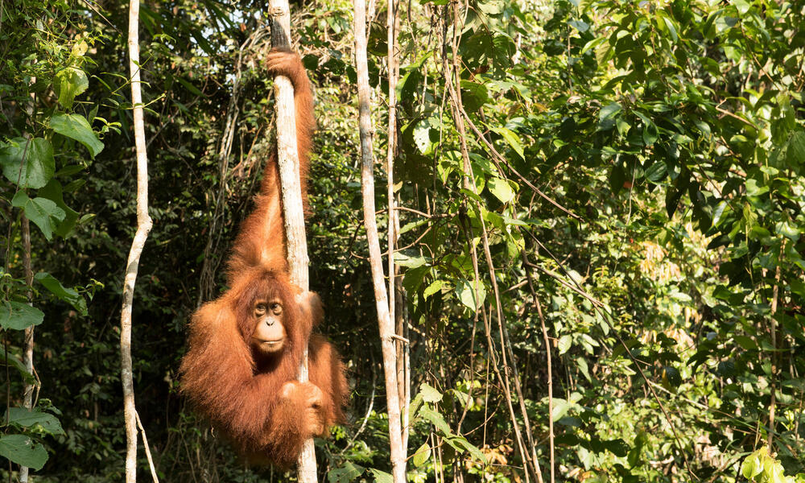

Cuatro tipos de bosques: conoce las diferencias!!!
Los bosques cubren un tercio de la superficie terrestre del mundo, el equivalente a más de 15.3 millones de millas cuadradas. En esta inmensa área se pueden encontrar hábitats de todo tipo, desde los bosques boreales de Canadá hasta las selvas tropicales de Brasil. Cada bosque es diferente, sin embargo algunos comparten rasgos comunes basados en el clima local. De hecho, todos los bosques del planeta pueden encajar en una de cuatro categorías.
1. Tropical
Además de un zoológico, ¿dónde puedes encontrar rinocerontes, tigres, elefantes y orangutanes en un mismo lugar? En los bosques tropicales de Borneo y Sumatra. Los bosques tropicales son maravillas de la biodiversidad: en este tipo de bosque se encuentran más plantas y animales distintos que en cualquier otro lugar de la Tierra. Gracias a temperaturas superiores a los 65ºF (18ºC) durante todo el año y la abundancia de agua, casi cualquier criatura puede prosperar aquí.

2. Subtropical
Los bosques subtropicales son como los primos tropicales, pero no tan atractivos o biodiversos. Aunque son un poco más calurosos y con una significante temporada de frío, cuentan con una gran variedad de plantas y animales que no son vulnerables ante el frío. Los bosques subtropicales son una especie de frontera entre los bosques templados y los más fríos, y además son el hogar invernal para especies migratorias como la mariposa Monarca.
3. Templado
Los bosques templados están sujetos a las cuatro estaciones del año. La mayoría de los bosques en Estados Unidos son bosques templados. Dependiendo de la región, puedes encontrar bosques de coníferas llenos de árboles de hoja perenne; bosques caducifolios o de hoja caduca, con árboles que arrojan sus hojas cada año; y algunos bosques que cuentan con una mezcla de todo. El frío invierno significa que los bosques templados no tienen la variedad de vida animal y vegetal que encontrarás en las regiones subtropicales o tropicales ya que muchos de los animales hibernan o migran durante el invierno.
4. Boreal
En otro extremo se encuentra el bosque boreal. Los bosques boreales están llenos de vida que está adaptada para soportar temperaturas frías durante todo el año, como el reno de bosque o caribú, o animales que pueden migrar largas distancias cada invierno. Los bosques boreales comprenden bosques caducifolios y de coníferas, cubriendo vastas extensiones en Canadá, Alaska y Rusia. Los bosques boreales también son un importante sumidero de carbono. Como todos los bosques, absorben el dióxido de carbono, uno de los principales contribuyentes al calentamiento global y al cambio climático, eliminándolo de la atmósfera y ayudando a mantener saludable a todo el planeta.
Si bien estos bosques son diferentes, comparten un común denominador muy desafortunado: todos están bajo amenaza. Estamos perdiendo 18.7 millones de acres de bosques cada año debido a la deforestación y la degradación, principalmente en los trópicos. Eso equivale a 27 campos de fútbol por minuto. Las causas pueden ser distintas: algunos bosques pueden estar siendo convertidos a la ganadería y la agricultura, mientras que de otros se extrae madera ilegalmente. Pero la pérdida y la degradación de los bosques son igualmente devastadoras.
World Wildlife Fund y nuestros socios de conservación en todo el mundo estamos trabajando para que esta situación cambie. Estamos implementando soluciones innovadoras y permanentes para conservar los bosques en todo el mundo: motivando a las empresas a utilizar productos de madera de bosques que se manejan de manera responsable, de acuerdo con las normas del Consejo de Administración Forestal (FSC, por sus siglas en inglés); trabajando con los gobiernos para frenar la tala ilegal; uniendo nuestros recursos con otros grupos para proteger enormes áreas de bosques a largo plazo; y mucho más. Juntos, podemos proteger los bosques -sin importar en qué categoría se encuentren- y mantenerlos seguros y saludables para las futuras generaciones.